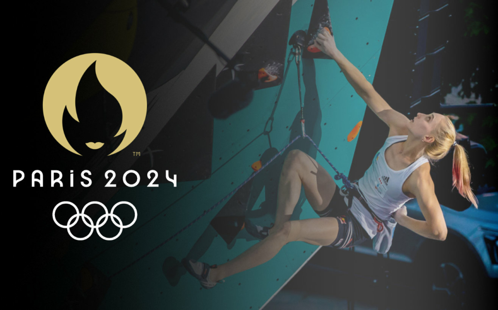

Jeux Olympiques de Paris 2024 : le guide pour l'escalade

Alors que la France se prépare à accueillir les Jeux Olympiques de 2024, il nous semblait nécessaire de faire un point sur le fonctionnement du système de qualifications et le déroulement des Jeux pour l’escalade.
Quelques modifications ont été apportées à cette épreuve depuis les Jeux de Tokyo où ce sport faisait sa grande entrée. Alors qu’un seul titre olympique par genre était décerné en 2020, il est désormais possible d’en obtenir 2 ! Cette différence est due à l’établissement de deux épreuves distinctes : un combiné bloc/difficulté et une épreuve de vitesse.
Lors des premiers Jeux d’escalade, les athlètes devaient performer lors de l’épreuve de vitesse, de bloc et de difficulté pour espérer remporter le titre olympique. Ce combiné inédit ne correspondait pas au fonctionnement habituel de notre discipline qui distinguait la vitesse comme une discipline bien à part. Beaucoup d’athlètes avaient dû adapter leurs entrainements pour tenter d’être plus polyvalents !
Au final, l’espagnol Alberto Gines Lopez et la Slovène Janja Garnbret ont remporté le premier titre olympique de l’histoire de l’escalade.
Siurana Climbing Festival du 11 au 13 novembre
Dans quelques jours, la falaise mythique de Siurana, en Espagne, accueillera la 2ème édition du Siurana Climbing Festival. Durant 3 jours, du 11 au 13 novembre, de nombreuses animations seront proposées.
De la grimpe bien sûr, mais également de nombreux ateliers (gestion de la peur, équipements de voie, …), des projections de films, des concerts et pas mal de surprises. Bref de quoi passer 3 journées de folie, le tout accompagné par des athlètes de renommés, et en particulier Chris Sharma pour ne citer que lui.
L’escalade à Siurana a commencé dans les années 80 avec l’apparition des premières voies d’escalade sportive. Contrairement à d’autres régions du pays où l’escalade sportive est née de l’évolution de l’escalade traditionnelle, Siurana est devenue le premier endroit de la péninsule à être directement propulsée au rang de falaise sportive.
Jaïn Kim revient avec un objectif clair en tête : les J.O de Paris 2024 !
Lors des championnats d’Asie en Corée du Sud, l’une des grimpeuses les plus performantes de l’Histoire des compétitions a fait sa réapparition sur la scène internationale après une pause de près de trois ans.
La longue pause de Jaïn Kim n’a toutefois pas été imposée par une blessure, mais plutôt par un heureux événement. « En fait, je me demandais si je pourrais un jour reprendre la compétition en tant qu’athlète, car j’ai marqué une pause de deux ans après ma grossesse », a déclaré la Coréenne. « Cependant, j’ai décidé d’être une maman dont ma fille sera fière, une maman qui n’abandonne jamais. Ce n’était pas facile de m’entraîner et d’élever mon bébé en même temps. »
Jaïn Kim est la grimpeuse sud-coréenne la plus populaire et la plus titrée de tous les temps, avec une quantité impressionnante de médailles remportées en Coupe du Monde : 30 médailles d’or, 14 d’argent et 17 de bronze. Elle compte également un titre de Championne du Monde de difficulté remporté à Gijon, en Espagne, en 2014.
Master international : une réussite totale pour Arkose
Le 29 octobre, Arkose offrait dans sa mythique salle de Pantin un spectacle qui a atteint des sommets.
Alors qu’une partie de l’élite mondiale de la grimpe s’affronte pour décrocher la première place du podium, plus de 600 spectateurs se déplacent pour l’évènement. 13 sportives et 15 sportifs s’attaquent aux voies spécialement ouvertes pour l’occasion : seulement 6 d’entre eux peuvent accéder à la finale.
Les demi finales se réalisent sur une voie travaillée au préalable par les grimpeurs. Il faut tout de même souligner que de légères modifications ont été apportées en dernière minute à la voie des hommes qui s’avérait trop accessible pour ce casting d’exception.
Le spectacle était d’autant plus présent lors de la finale qui s’est réalisée à vue pour tous les qualifiés. Les premières, deuxièmes et troisièmes places se voient offrir, en plus du trophée Arkose, respectivement un chèque de 4000, 2000 et 500€.
Drew Ruana répète l’un des blocs les plus durs de Daniel Woods
Il y a quelques semaines, Drew Ruana avait déclaré avoir enchaîné trois blocs dans le huitième degré (un 8C, un 8B+ et un 8C+) sans en donner les noms, le tout en 48 heures. Certaines rumeurs affirmaient que le 8C+ n’était autre que « The Ice Knife Sit » un bloc resté vierge de toute ascension depuis la première ascension de Daniel Woods en 2013. Drew vient finalement d’officialiser son ascension sur les réseaux sociaux, confirmant qu’il avait enchaîné « The Ice Knife Sit ».
C’est donc au début du mois, le 5 octobre, qu’il a signé la première répétition de cette ligne libérée par Daniel Woods. Dave Graham avait d’abord réalisé la version debout de ce bloc. Puis, Daniel Woods avait proposé une version assise, qui ajoute une séquence de cinq mouvements en 8B très complexes permettant de rejoindre la version debout. « Le style de ce bloc est différent de tout ce que j’ai grimpé jusqu’à présent », avait-il déclaré au moment de son ascension. « Les prises nécessitent une bonne adhérence et les mouvements requièrent de l’équilibre et sont vraiment étranges ».
Dans son post, Drew Ruana a déclaré qu’il s’agissait de son bloc le plus dur à ce jour et certainement celui qui lui avait demandé le plus de travail, après avoir passé plus de 35 jours à tenter cette ligne.